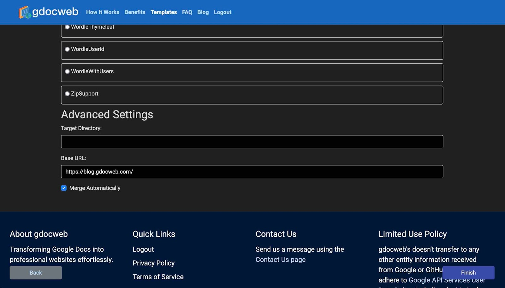

gdocweb Blog
Regenerate Immediately and RSS
January 14th, 2024
by Shai Almog

gdocweb has its first few users and one of the big complaints is about the tediousness of going through that wizard every time you just want to test a change to a document. I don’t want gdocweb working in the background reading my documents and publishing, that would be an invasion of privacy. But I would like it to work instantly.
With that we now have a link to regenerate the site quickly. Not with a single click, you still need to go through a Google login for security. Once that’s done you will reach the final stage of the wizard directly and the website will be updated. You can do that by visiting https://gdocweb.com/regenerateSite
RSS (Really Simple Syndication) and Sitemap
Many of us go through life without knowing the RSS exists, it’s a workhorse that powers a great deal of functionality on the internet. Yet, we remain oblivious to it. RSS lets a website broadcast about the changes it went through, e.g. this blog now features an RSS feed that can notify you about every new post to the site.
Typically one would read an RSS feed using a dedicated application (e.g. Feedly), but browsers also have some basic support for RSS. The biggest benefit of RSS is in syndication, it means that other sites can publish a “feed” from this site detailing the latest bit of news. It’s great for search engine optimization and a wonderful feature for users of your website. You can see the feed.xml RSS file here.
Sitemaps are even more important. They let search engines know about the pages you have in the website and the dates in which they were last updated. This helps search engines keep track of everything and makes your site easier to find. The sitemap for this site can be found here. Normally you wouldn’t care about it, but search engines care about it...
Both files require a full URL to the generated pages in order to function. Unfortunately, this isn’t trivial. The gdocweb blog can be reached both on: https://shai-almog.github.io/GdocwebBlog/ and on https://blog.gdocweb.com/. The latter is the correct link and the former correctly redirects to it, however if we have links to the former this will reduce the search engine ranking. We need to link to the correct blog URL but gdocweb can’t guess it from the project name.
That’s why all of this good stuff will only work if you set the value of the “Base URL” entry in the GitHub repository selection stage of the wizard. Once that is set as shown in the following image, this will all work as expected.

As a bonus, setting this value will also set the canonical URL for each page. This is an important attribute of an HTML file that helps search engines find your website.
Target Directory and Automatic Merge
In the previous image we could see two additional features that are also quite important but mostly geared towards the technical crowd. The first is the target directory. By default, gdocweb generates everything into the GitHub Projects root directory. This is great for a site, however if you’re building documentation for a pre-existing project then generating the project to a docs directory might be a better approach. The “Target Directory” option is a great tool for developers building documentation and websites for their projects.
gdocweb generates a pull request for the project and merges that pull request for you automatically. This default behavior might not be right for all projects and also includes a risk. You might want an additional review for changes. In that case you can uncheck the “Merge Automatically” flag and disable the default behavior. This means a run of the gdocweb wizard will result with a new pull request for you to merge manually. For me that has been a valuable debugging tool as I could experiment with changes to the blog without merging them in.
You can see the document that generated this post here.

Comments